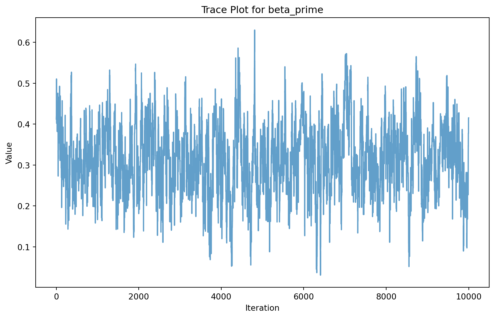
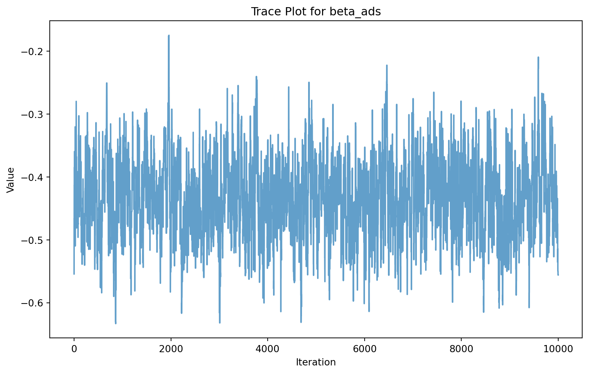
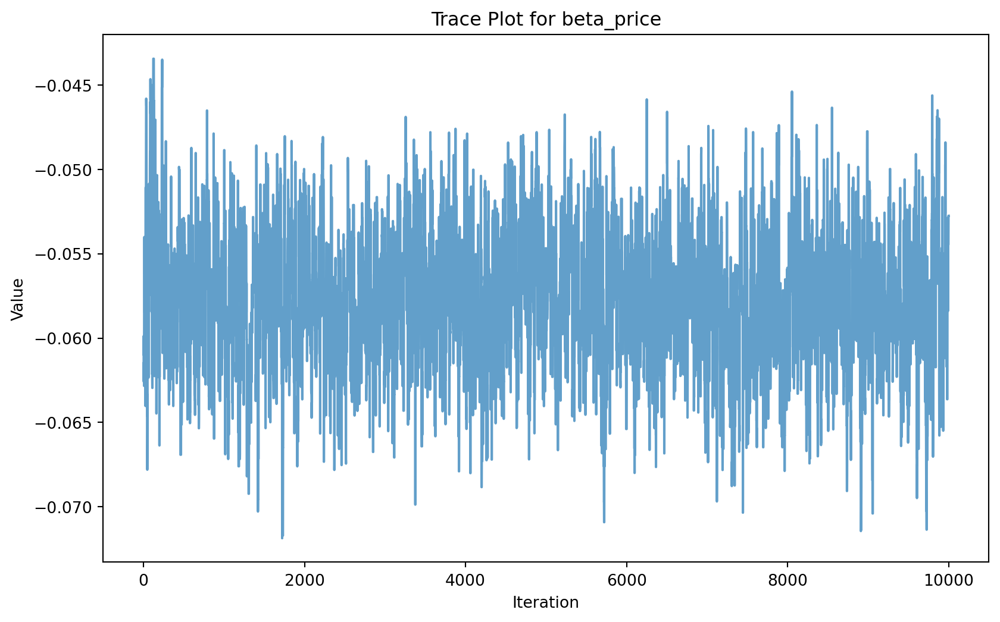
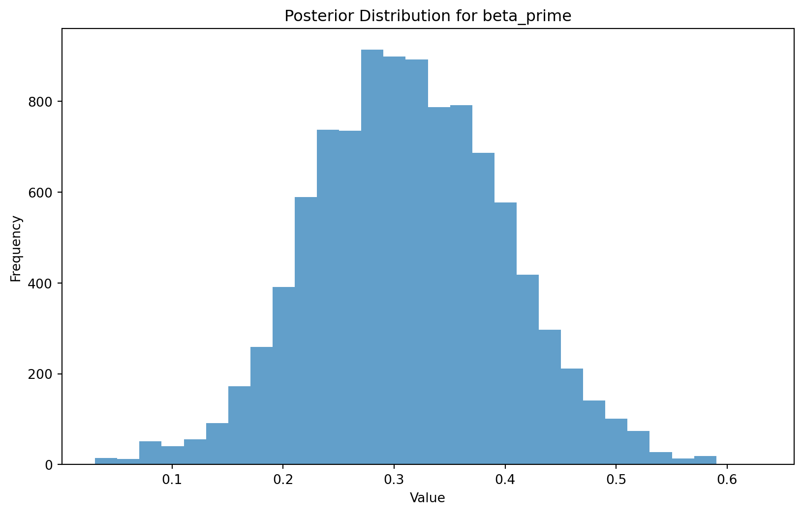
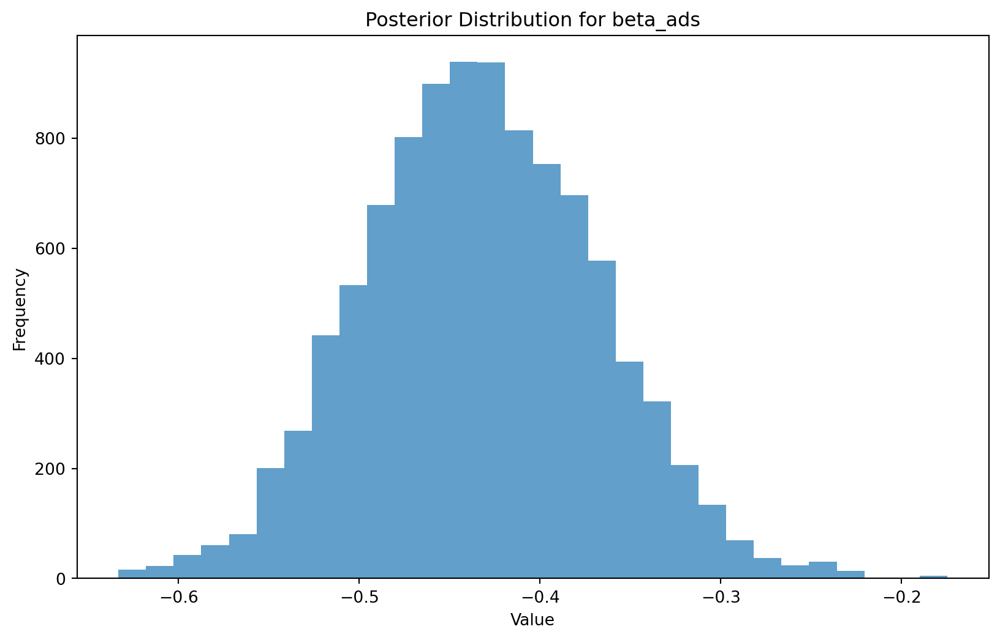
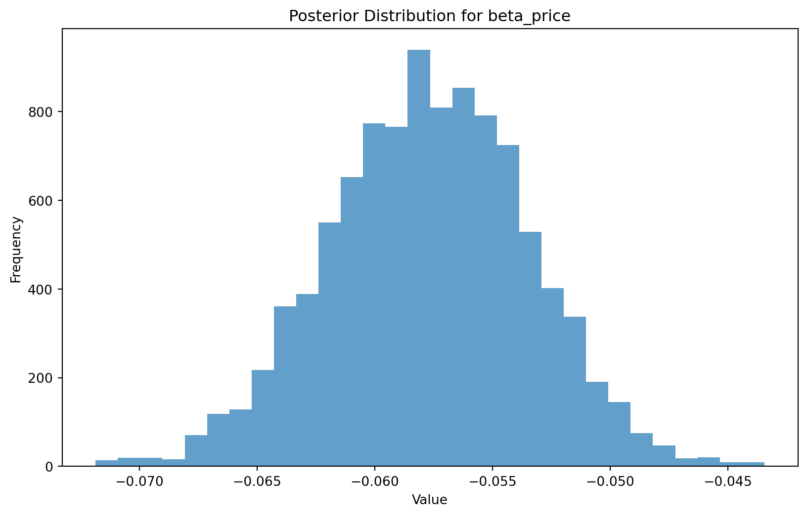

This assignment expores two methods for estimating the MNL model: (1) via Maximum Likelihood, and (2) via a Bayesian approach using a Metropolis-Hastings MCMC algorithm.
1. Likelihood for the Multi-nomial Logit (MNL) Model
Suppose we have \(i=1,\ldots,n\) consumers who each select exactly one product \(j\) from a set of \(J\) products. The outcome variable is the identity of the product chosen \(y_i \in \{1, \ldots, J\}\) or equivalently a vector of \(J-1\) zeros and \(1\) one, where the \(1\) indicates the selected product. For example, if the third product was chosen out of 3 products, then either \(y=3\) or \(y=(0,0,1)\) depending on how we want to represent it. Suppose also that we have a vector of data on each product \(x_j\) (eg, brand, price, etc.).
We model the consumer’s decision as the selection of the product that provides the most utility, and we’ll specify the utility function as a linear function of the product characteristics:
\[ U_{ij} = x_j'\beta + \epsilon_{ij} \]
where \(\epsilon_{ij}\) is an i.i.d. extreme value error term.
The choice of the i.i.d. extreme value error term leads to a closed-form expression for the probability that consumer \(i\) chooses product \(j\):
A clever way to write the individual likelihood function for consumer \(i\) is the product of the \(J\) probabilities, each raised to the power of an indicator variable (\(\delta_{ij}\)) that indicates the chosen product:
We will simulate data from a conjoint experiment about video content streaming services. We elect to simulate 100 respondents, each completing 10 choice tasks, where they choose from three alternatives per task. For simplicity, there is not a “no choice” option; each simulated respondent must select one of the 3 alternatives.
Each alternative is a hypothetical streaming offer consistent of three attributes: (1) brand is either Netflix, Amazon Prime, or Hulu; (2) ads can either be part of the experience, or it can be ad-free, and (3) price per month ranges from $4 to $32 in increments of $4.
The part-worths (ie, preference weights or beta parameters) for the attribute levels will be 1.0 for Netflix, 0.5 for Amazon Prime (with 0 for Hulu as the reference brand); -0.8 for included adverstisements (0 for ad-free); and -0.1*price so that utility to consumer \(i\) for hypothethical streaming service \(j\) is
where the variables are binary indicators and \(\varepsilon\) is Type 1 Extreme Value (ie, Gumble) distributed.
The following code provides the simulation of the conjoint data. :::: {.callout-note collapse=“true”}
import numpy as npimport pandas as pd# Set seed for reproducibilitynp.random.seed(123)# Define attributesbrand = ["N", "P", "H"] # Netflix, Prime, Huluad = ["Yes", "No"]price = np.arange(8, 33, 4) # $8 to $32 in $4 increments# Generate all possible profilesprofiles = pd.DataFrame([ {'brand': b, 'ad': a, 'price': p}for b in brand for a in ad for p in price])m = profiles.shape[0]# Part-worth utilities (true parameters)b_util = {"N": 1.0, "P": 0.5, "H": 0}a_util = {"Yes": -0.8, "No": 0.0}p_util =lambda p: -0.1* p# Configurationn_peeps =100n_tasks =10n_alts =3# Function to simulate one respondent’s datadef sim_one(id_): all_tasks = []for t inrange(1, n_tasks +1): sampled = profiles.sample(n=n_alts).copy() sampled["resp"] = id_ sampled["task"] = t sampled["v"] = ( sampled["brand"].map(b_util) + sampled["ad"].map(a_util) + p_util(sampled["price"]) )# Add Gumbel (Type I Extreme Value) noise gumbel_noise =-np.log(-np.log(np.random.uniform(size=n_alts))) sampled["u"] = sampled["v"] + gumbel_noise sampled["choice"] = (sampled["u"] == sampled["u"].max()).astype(int) all_tasks.append(sampled)return pd.concat(all_tasks)# Simulate data for all respondentsconjoint_data = pd.concat([sim_one(i) for i inrange(1, n_peeps +1)])# Keep only observable variablesconjoint_data = conjoint_data[["resp", "task", "brand", "ad", "price", "choice"]]conjoint_data.head()
resp
task
brand
ad
price
choice
27
1
1
P
No
32
0
12
1
1
N
No
28
0
11
1
1
N
No
24
1
40
1
2
H
No
28
0
35
1
2
H
No
8
1
3. Preparing the Data for Estimation
The “hard part” of the MNL likelihood function is organizing the data, as we need to keep track of 3 dimensions (consumer \(i\), covariate \(k\), and product \(j\)) instead of the typical 2 dimensions for cross-sectional regression models (consumer \(i\) and covariate \(k\)). The fact that each task for each respondent has the same number of alternatives (3) helps. In addition, we need to convert the categorical variables for brand and ads into binary variables.
# Step 1: Encode categorical variablesconjoint_data['brand_N'] = (conjoint_data['brand'] =='N').astype(int)conjoint_data['brand_P'] = (conjoint_data['brand'] =='P').astype(int)conjoint_data['ad_Yes'] = (conjoint_data['ad'] =='Yes').astype(int)# Step 2: Combine encoded categorical variables with numeric variablesconjoint_data['price_scaled'] = conjoint_data['price'] # Keep price as numericX = conjoint_data[['brand_N', 'brand_P', 'ad_Yes', 'price_scaled']].values# Step 3: Store structured data for estimationy = conjoint_data['choice'].valuesn, k = X.shape # n = number of rows, k = number of covariates# Step 4: Check dimensionsprint(f"Number of observations (n): {n}")print(f"Number of covariates (k): {k}")# Step 5: Preview reshaped X as a DataFrameX_df = pd.DataFrame(X, columns=['brand_N', 'brand_P', 'ad_Yes', 'price_scaled'])print(X_df.head())
Number of observations (n): 3000
Number of covariates (k): 4
brand_N brand_P ad_Yes price_scaled
0 0 1 0 32
1 1 0 0 28
2 1 0 0 24
3 0 0 0 28
4 0 0 0 8
4. Estimation via Maximum Likelihood
from scipy.optimize import minimize# Define the MNL log-likelihood functiondef mnl_log_likelihood(beta, X, y):""" Multinomial Logit Log-Likelihood Function :param beta: Coefficients (array-like) :param X: Covariates (n x k matrix) :param y: Choices (binary vector of length n) :return: Negative log-likelihood (to minimize) """ utilities = X @ beta # Linear combination of covariates and coefficients exp_utilities = np.exp(utilities) # Exponentiate utilities probabilities = exp_utilities / exp_utilities.sum(axis=0) # Normalize probabilities log_probabilities = np.log(probabilities) log_likelihood = np.sum(y * log_probabilities) # Log-likelihoodreturn-log_likelihood # Negative log-likelihood for minimization# Initial guesses for beta coefficientsinitial_beta = np.zeros(X.shape[1])# Set up and run the optimizerresult = minimize( fun=mnl_log_likelihood, x0=initial_beta, args=(X, y), method='BFGS')# Extract resultsestimated_beta = result.xlog_likelihood_at_optimum =-result.fun# Label the estimated coefficientsparameters = ['beta_netflix', 'beta_prime', 'beta_ads', 'beta_price']results = pd.DataFrame({'Parameter': parameters,'Estimate': estimated_beta})# Print resultsprint(results)print(f"Log-Likelihood at Optimum: {log_likelihood_at_optimum}")
# Calculate standard errors and confidence intervalshessian_inv = result.hess_inv # Inverse Hessian matrixstandard_errors = np.sqrt(np.diag(hessian_inv)) # Standard errors from diagonal of Hessian# Construct 95% confidence intervalsconfidence_intervals = [ (est -1.96* se, est +1.96* se)for est, se inzip(estimated_beta, standard_errors)]# Combine results into a DataFrameresults = pd.DataFrame({'Parameter': parameters,'Estimate': estimated_beta,'Std. Error': standard_errors,'95% CI Lower': [ci[0] for ci in confidence_intervals],'95% CI Upper': [ci[1] for ci in confidence_intervals]})# Print resultsprint(results)
The output provides a detailed summary of the maximum likelihood estimates (MLEs) for four parameters in the Multinomial Logit (MNL) model, along with their standard errors and 95% confidence intervals. These estimates quantify how different attributes (streaming service brand, ad presence, and price) influence the probability of a product being chosen.
beta_netflix: Holding other factors constant, choosing Netflix increases the utility of a product by approximately 0.59 units relative to the baseline brand (likely Hulu). The 95% confidence interval [0.434, 0.745] does not include 0, indicating the effect is statistically significant. The standard error (0.079) is relatively small, suggesting the estimate is precise. This reflects a strong preference for Netflix.
beta_prime: Choosing Amazon Prime increases utility by 0.31 units, again relative to the baseline. The 95% confidence interval [0.145, 0.475] excludes 0, indicating statistical significance. The standard error (0.084) is a bit higher than for Netflix but still moderate, suggesting the estimate is fairly precise. Prime is also preferred over the baseline, though less strongly than Netflix.
beta_ads: The presence of ads reduces the utility of a product by −0.43 units. The confidence interval [−0.558, −0.304] lies entirely below 0, indicating a statistically significant negative effect. The standard error (0.065) is small, confirming this is a robust and meaningful finding: ads detract from the product’s attractiveness.
beta_price: Each unit increase in price reduces utility by about −0.058 units. While this is the smallest effect in magnitude, the confidence interval [−0.066, −0.049] is extremely narrow and does not contain 0, indicating a very precise and statistically significant effect. This aligns with economic intuition: higher prices reduce utility.
Overall, all four parameters are statistically significant, and the signs of the coefficients align with expected consumer preferences: consumers prefer Netflix and Prime over the baseline, dislike ads, and are sensitive to price increases.
5. Estimation via Bayesian Methods
todo: code up a metropolis-hasting MCMC sampler of the posterior distribution. Take 11,000 steps and throw away the first 1,000, retaining the subsequent 10,000.
import numpy as npimport pandas as pd# Define the log-prior functiondef log_prior(beta):""" Log-prior for the coefficients. :param beta: Coefficients (array-like) :return: Log-prior value """ log_prior_beta = np.sum(-0.5* (beta[:3] **2) /5) # N(0, 5) for binary variables log_prior_price =-0.5* (beta[3] **2) /1# N(0, 1) for pricereturn log_prior_beta + log_prior_price# Define the log-posterior functiondef log_posterior(beta, X, y):""" Log-posterior function. :param beta: Coefficients (array-like) :param X: Covariates (n x k matrix) :param y: Choices (binary vector of length n) :return: Log-posterior value """ log_lik =-mnl_log_likelihood(beta, X, y) # Log-likelihood log_pr = log_prior(beta) # Log-priorreturn log_lik + log_pr # Log-posterior# Metropolis-Hastings MCMC samplerdef metropolis_hastings(X, y, n_steps=11000, burn_in=1000):""" Metropolis-Hastings MCMC sampler. :param X: Covariates (n x k matrix) :param y: Choices (binary vector of length n) :param n_steps: Total number of steps :param burn_in: Number of steps to discard :return: Posterior samples (after burn-in) """# Initialize parameters beta_current = np.zeros(X.shape[1]) # Start at zero samples = []# Proposal distribution parameters proposal_std = np.array([0.05, 0.05, 0.05, 0.005]) # Standard deviationsfor step inrange(n_steps):# Propose new beta values beta_proposed = beta_current + np.random.normal(0, proposal_std)# Calculate log-posterior for current and proposed values log_post_current = log_posterior(beta_current, X, y) log_post_proposed = log_posterior(beta_proposed, X, y)# Acceptance probability acceptance_prob = np.exp(log_post_proposed - log_post_current)# Accept or reject the proposalif np.random.uniform(0, 1) < acceptance_prob: beta_current = beta_proposed# Store the sample samples.append(beta_current)# Discard burn-in samples and return the restreturn np.array(samples[burn_in:])# Run the MCMC samplerposterior_samples = metropolis_hastings(X, y)# Analyze posterior samplesposterior_means = posterior_samples.mean(axis=0)posterior_stds = posterior_samples.std(axis=0)posterior_cis = np.percentile(posterior_samples, [2.5, 97.5], axis=0)# Print resultsparameters = ['beta_netflix', 'beta_prime', 'beta_ads', 'beta_price']results = pd.DataFrame({'Parameter': parameters,'Posterior Mean': posterior_means,'Posterior Std. Dev': posterior_stds,'95% CI Lower': posterior_cis[0],'95% CI Upper': posterior_cis[1]})print(results)
hint: Use N(0,5) priors for the betas on the binary variables, and a N(0,1) prior for the price beta.
_hint: instead of calculating post=lik*prior, you can work in the log-space and calculate log-post = log-lik + log-prior (this should enable you to re-use your log-likelihood function from the MLE section just above)_
hint: King Markov (in the video) use a candidate distribution of a coin flip to decide whether to move left or right among his islands. Unlike King Markov, we have 4 dimensions (because we have 4 betas) and our dimensions are continuous. So, use a multivariate normal distribution to pospose the next location for the algorithm to move to. I recommend a MNV(mu, Sigma) where mu=c(0,0,0,0) and sigma has diagonal values c(0.05, 0.05, 0.05, 0.005) and zeros on the off-diagonal. Since this MVN has no covariances, you can sample each dimension independently (so 4 univariate normals instead of 1 multivariate normal), where the first 3 univariate normals are N(0,0.05) and the last one if N(0,0.005).
# Define the log-prior functiondef log_prior(beta):""" Log-prior for the coefficients. :param beta: Coefficients (array-like) :return: Log-prior value """ log_prior_beta = np.sum(-0.5* (beta[:3] **2) /5) # N(0, 5) for binary variables log_prior_price =-0.5* (beta[3] **2) /1# N(0, 1) for pricereturn log_prior_beta + log_prior_price# Define the log-posterior functiondef log_posterior(beta, X, y):""" Log-posterior function. :param beta: Coefficients (array-like) :param X: Covariates (n x k matrix) :param y: Choices (binary vector of length n) :return: Log-posterior value """ log_lik =-mnl_log_likelihood(beta, X, y) # Log-likelihood log_pr = log_prior(beta) # Log-priorreturn log_lik + log_pr # Log-posterior# Metropolis-Hastings MCMC samplerdef metropolis_hastings(X, y, n_steps=11000, burn_in=1000):""" Metropolis-Hastings MCMC sampler. :param X: Covariates (n x k matrix) :param y: Choices (binary vector of length n) :param n_steps: Total number of steps :param burn_in: Number of steps to discard :return: Posterior samples (after burn-in) """# Initialize parameters beta_current = np.zeros(X.shape[1]) # Start at zero samples = []# Proposal distribution parameters proposal_std = np.array([0.05, 0.05, 0.05, 0.005]) # Standard deviationsfor step inrange(n_steps):# Propose new beta values beta_proposed = beta_current + np.random.normal(0, proposal_std)# Calculate log-posterior for current and proposed values log_post_current = log_posterior(beta_current, X, y) log_post_proposed = log_posterior(beta_proposed, X, y)# Acceptance probability acceptance_prob = np.exp(log_post_proposed - log_post_current)# Accept or reject the proposalif np.random.uniform(0, 1) < acceptance_prob: beta_current = beta_proposed# Store the sample samples.append(beta_current)# Discard burn-in samples and return the restreturn np.array(samples[burn_in:])# Run the MCMC samplerposterior_samples = metropolis_hastings(X, y)# Analyze posterior samplesposterior_means = posterior_samples.mean(axis=0)posterior_stds = posterior_samples.std(axis=0)posterior_cis = np.percentile(posterior_samples, [2.5, 97.5], axis=0)# Print resultsparameters = ['beta_netflix', 'beta_prime', 'beta_ads', 'beta_price']results = pd.DataFrame({'Parameter': parameters,'Posterior Mean': posterior_means,'Posterior Std. Dev': posterior_stds,'95% CI Lower': posterior_cis[0],'95% CI Upper': posterior_cis[1]})print(results)# Trace plot for one parameter (e.g., beta_netflix)import matplotlib.pyplot as pltplt.figure(figsize=(10, 6))plt.plot(posterior_samples[:, 0], alpha=0.7)plt.title("Trace Plot for beta_netflix")plt.xlabel("Iteration")plt.ylabel("Value")plt.show()# Histogram of posterior distribution for beta_netflixplt.figure(figsize=(10, 6))plt.hist(posterior_samples[:, 0], bins=30, alpha=0.7)plt.title("Posterior Distribution for beta_netflix")plt.xlabel("Value")plt.ylabel("Frequency")plt.show()
todo: for at least one of the 4 parameters, show the trace plot of the algorithm, as well as the histogram of the posterior distribution.
import matplotlib.pyplot as plt# Plot trace plots for all parametersparameters = ['beta_netflix', 'beta_prime', 'beta_ads', 'beta_price']for i, param inenumerate(parameters): plt.figure(figsize=(10, 6)) plt.plot(posterior_samples[:, i], alpha=0.7) plt.title(f"Trace Plot for {param}") plt.xlabel("Iteration") plt.ylabel("Value") plt.show()# Plot histograms for all parametersfor i, param inenumerate(parameters): plt.figure(figsize=(10, 6)) plt.hist(posterior_samples[:, i], bins=30, alpha=0.7) plt.title(f"Posterior Distribution for {param}") plt.xlabel("Value") plt.ylabel("Frequency") plt.show()






todo: report the 4 posterior means, standard deviations, and 95% credible intervals and compare them to your results from the Maximum Likelihood approach.
# Compare Bayesian posterior results to Maximum Likelihood estimatescomparison = pd.DataFrame({'Parameter': parameters,'MLE Estimate': estimated_beta,'MLE Std. Error': standard_errors,'Bayesian Posterior Mean': posterior_means,'Bayesian Posterior Std. Dev': posterior_stds,'Bayesian 95% CI Lower': posterior_cis[0],'Bayesian 95% CI Upper': posterior_cis[1]})print(comparison)
todo: Suppose you did not simulate the data. What do you observe about the parameter estimates? What does \(\beta_\text{Netflix} > \beta_\text{Prime}\) mean? Does it make sense that \(\beta_\text{price}\) is negative?
Interpreting Parameter Estimates Without Knowing the True Data-Generating Process
If we had not simulated the data and were instead analyzing results from a real-world conjoint survey, the parameter estimates shown would still provide valuable and intuitive insights about consumer preferences in the video streaming market. The estimates suggest that, holding other features constant, consumers derive the most utility from Netflix (β ≈ 0.59), followed by Amazon Prime (β ≈ 0.31), with Hulu implicitly serving as the baseline. The inequality 𝛽Netflix > 𝛽Prime implies that consumers prefer Netflix to Prime, suggesting that Netflix enjoys higher brand equity or stronger perceived value. This is consistent with Netflix’s market position as a dominant streaming platform with a well-known content library.
The negative coefficients for the ad-supported format (β ≈ –0.43) and price (β ≈ –0.058) are also logical. The ad coefficient reflects a clear consumer preference for ad-free experiences, which aligns with the growing trend of users opting for premium subscriptions to avoid interruptions. Similarly, the negative price coefficient confirms price sensitivity: as subscription cost increases, the likelihood of a consumer choosing that option decreases. Taken together, these results are economically reasonable and would be credible inputs for managerial decisions around pricing strategy, product bundling, or feature prioritization—even without access to the underlying data-generating process. The tight confidence intervals further suggest that these insights are statistically robust and reliable.
todo: At a high level, discuss what change you would need to make in order to simulate data from — and estimate the parameters of — a multi-level (aka random-parameter or hierarchical) model. This is the model we use to analyze “real world” conjoint data.
High-level changes for simulating and estimating a multi-level model:
Simulating Data:
In a multi-level model, individual-level heterogeneity is introduced by allowing the coefficients (betas) to vary across respondents.
Instead of fixed betas, simulate respondent-specific betas drawn from a distribution (e.g., Normal distribution with mean and variance for each beta).
Use hierarchical Bayesian methods or maximum likelihood estimation with random effects.
For Bayesian estimation, specify priors for the population-level mean and variance of the betas, and use MCMC to sample from the posterior distribution.
For maximum likelihood, use techniques like Expectation-Maximization (EM) or integrate over the random effects using numerical methods.
Model Specification:
Update the likelihood function to account for individual-level random effects.
This involves integrating over the distribution of random effects for each respondent.
Computational Considerations:
Multi-level models are computationally intensive due to the need to estimate both population-level parameters and individual-level random effects.
Efficient sampling methods (e.g., Hamiltonian Monte Carlo) or approximation techniques (e.g., variational inference) may be required.
Example: Simulate respondent-specific betas and update the likelihood function to include random effects.